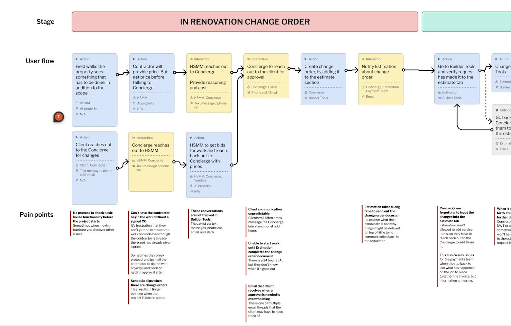
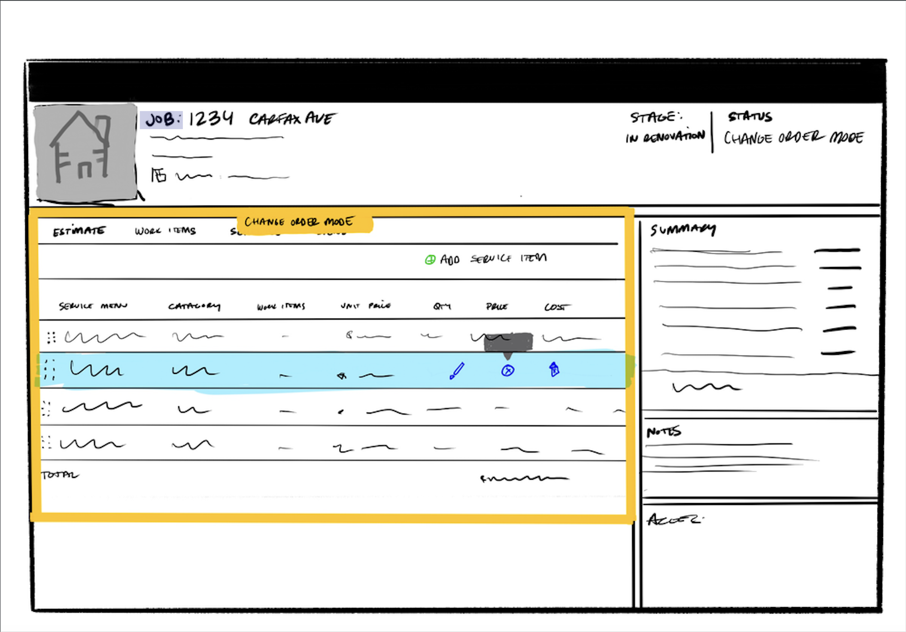
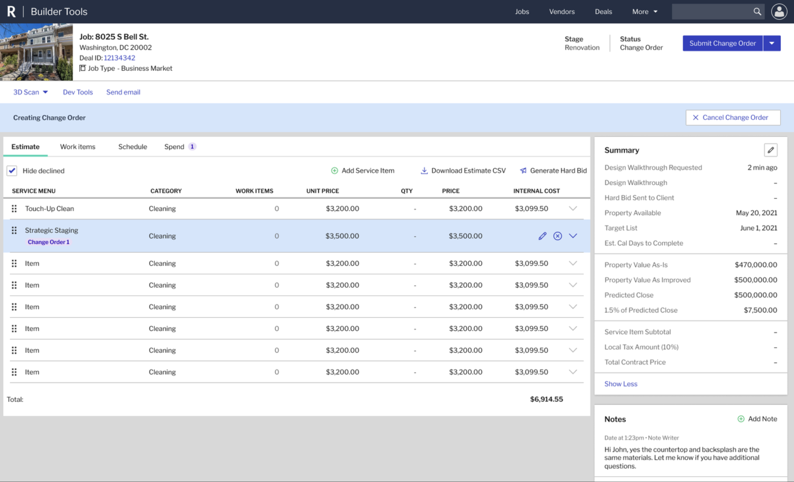

Redfin: Change Orders
Bringing a scattered, manual workflow into one system.

Overview
Change orders, meaning any amendment to the original renovation contract, happened on about 73% of Redfin Home Services jobs, and each one affected timelines, budgets and team coordination. Despite that, the process was manual, spread across platforms and invisible to most of the people it affected. As Lead Product Designer, I designed a centralized change order system inside Builder Tools, Redfin's internal platform. The goal was end-to-end visibility for everyone in the renovation lifecycle.

Problem
Requests came in through Slack, email, phone calls and Zendesk, so nobody could track who asked for what, when or why. Field teams couldn't see the real-time status of approvals, which led to higher costs and schedule delays. The business couldn't see why changes were happening either, so it couldn't act on the main lever for shortening renovation timelines. Nobody had the full picture.

Designing for five roles
Renovation is a team sport, and this system had to work for five roles. Listing Concierges initiate changes, Market Managers price them and requisition the work, and Estimators break down costs and generate the DocuSign for the seller. Superintendents in the field need to see the current scope to manage vendors, and Payment Coordinators need a clear audit trail of taxable and non-taxable changes. Each role needed something different from the same data.
Research
We interviewed 24 employees across Home Services, Concierge and RedfinNow, and I shadowed crews at active renovation sites to see the offline hurdles firsthand. In FigJam, I ran journey-mapping sessions where users laid out their ideal workflow against their actual one, which pinpointed where communication broke down. I also reviewed the legal Change Order and Scope of Work forms so the digital version would stay compliant with state and local tax requirements.
Four findings shaped the design. Change orders were the most disruptive part of any schedule, users couldn't tell original scope from later additions, payment teams were calculating taxes and totals by hand, and there was no way to see what stage a change order was in. Each one became a feature.
Execution
I started with paper sketches and Procreate wireframes on the iPad, exploring layouts like the Estimate tab before committing to UI. Next, I designed a state machine for the job lifecycle, with statuses like Building Change Order, New Change Order Request and Requisition CO Work that lock and unlock service items automatically. In Figma, I added a Version column to the Estimate tab that labels each item as Initial SOW or Change Order \#01. That gave the team the audit trail they'd been missing.
The final system also included:
- A persistent banner that tells users when they're in Building mode, so no one edits by accident.
- Read-only service items once a change order is submitted, protecting data while the estimator processes it.
- A history feed that logs every change, from a unit price update to the reason behind a client request.
- A standardized table that calculates taxable and non-taxable subtotals, taking manual math off the Payments team.
Retrospective
The national rollout saw immediate adoption, and many users didn't need formal training because they simply followed the status triggers. RedfinNow had its own design team, so we piloted change orders with our team first before they'd adopt it, and I built the system with versioning in mind to make that handoff possible. I left Redfin before that rollout, so I can't speak to how it landed. The project also exposed how few shared components our internal tools had, which pushed teams toward a more collaborative design environment. The status triggers did the training for us.